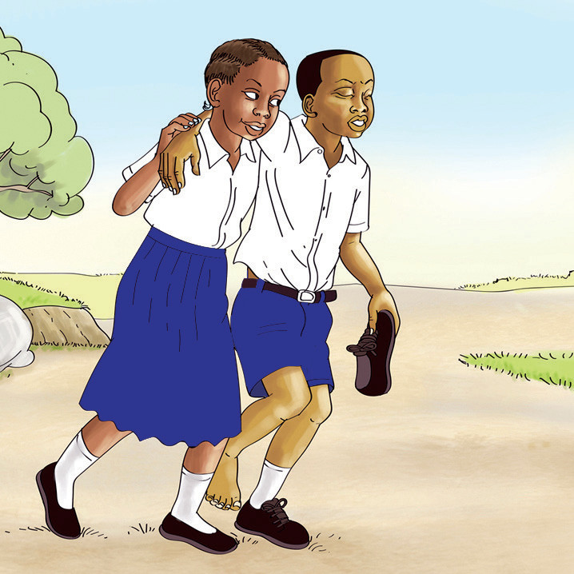
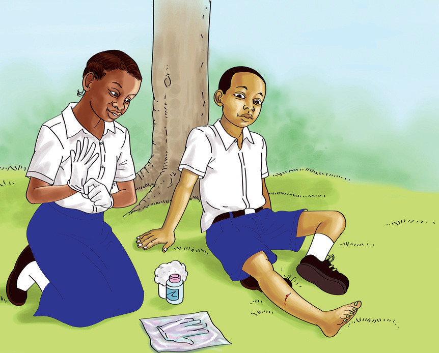
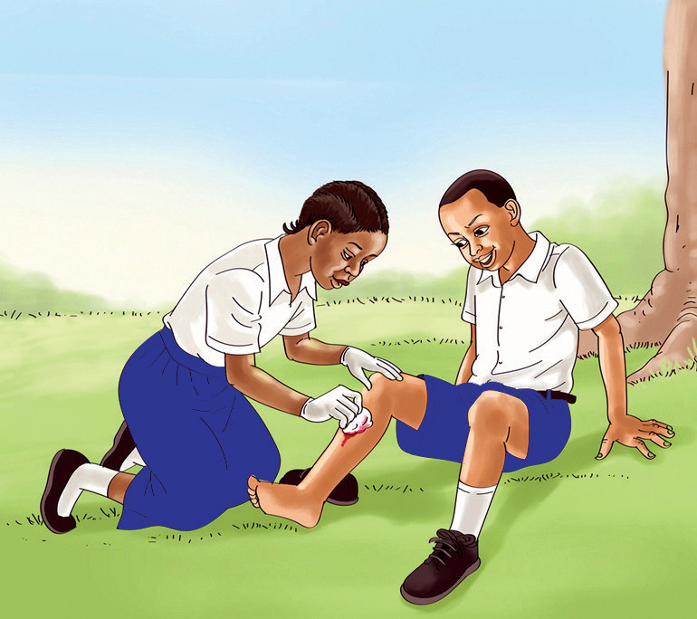
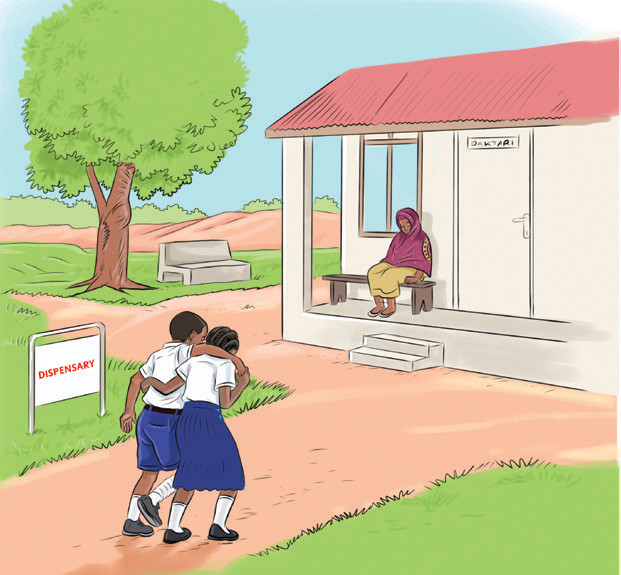

Hatua za kutoa huduma ya kwanza kwa mtu aliyeumwa na nge
1. Mpeleke na mkalishe mgonjwa sehemu salama.

2. Vaa glovu kabla ya kuanza kutoa huduma.

3. Safisha jeraha kwa pamba yenye dawa kama vile spiriti ili kuua vijidudu.

4. Baada ya hapo mgonjwa apelekwe hospitali kwa ajili ya matibabu zaidi.
